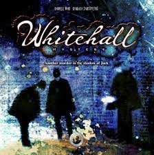

Whitehall Mystery
Catégories

Description rapide
Dans le Londres du 19è siècle, Jack l'éventreur sévit dans les rues et des dépouilles de corps sont retrouvées régulièrement. Est-ce que la police réussira à arrêter Jack avant que ça soit trop tard?
Description
Octobre 1888 : Lors de la construction du siège de la police métropolitaine près de Whitehall, qui sera plus tard connu sous le nom de Scotland Yard, les restes d'un corps sont retrouvés. En septembre, un bras coupé avait déjà été découvert sur les rives boueuses de la Tamise.
Il y a un autre meurtrier errant dans les rues de Londres à Whitehall, s'amusant à répandre les morceaux d'une pauvre femme autour de Whitehall, comme une sorte de chasse au trésor macabre. L'identité de ce monstre et de sa malheureuse victime est un mystère, le Whitehall Mystery.
Liens
Informations complémentaires
Notes
Pour pouvoir jouer en ligne, il vous suffit d'avoir la carte du plateau et un système pour la partager (Roll20, simple partage d'écran ...)